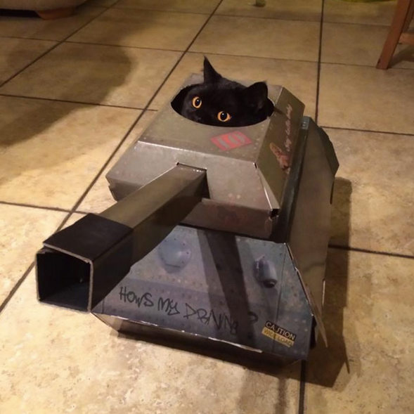

If you're here then congratulations! If this apocalyptic even that awaits us didn't make you leave, then nothing will. Your bravery is remarkable!
Just like birds, our feline friends have a vast arsenal at their disposal. The trick, however, is that you never know what comes with them. It's like knowing that you are buying a box of chocolates, but don't know what variations of chocolate are inside. See, cats must be nurtured and trained until they start showing their latent abilities, so get adopting a friend - you never know what kind of countermeasures you will end up with!
Fret not. There are subtle signs that indicate that your feline WMD (Weapon of Mass Destruction) is ready. Please see some examples in the pictures below. If it looks anything like the following pictures, then it's ready.
As you can see, the majority will choose to stick to the ground and reclaim it, while others will accept the challenge and take on the skies, so if you ever wake up in the morning and your feline friend is missing, don't forget to look up... it might've just been above you the whole time.
We have the means to take the fight to these birds, but we need YOUR help to grow stronger. Sign up within the next 15 days and receive our BASA™ food, carefully developed to help your cat grow strong!